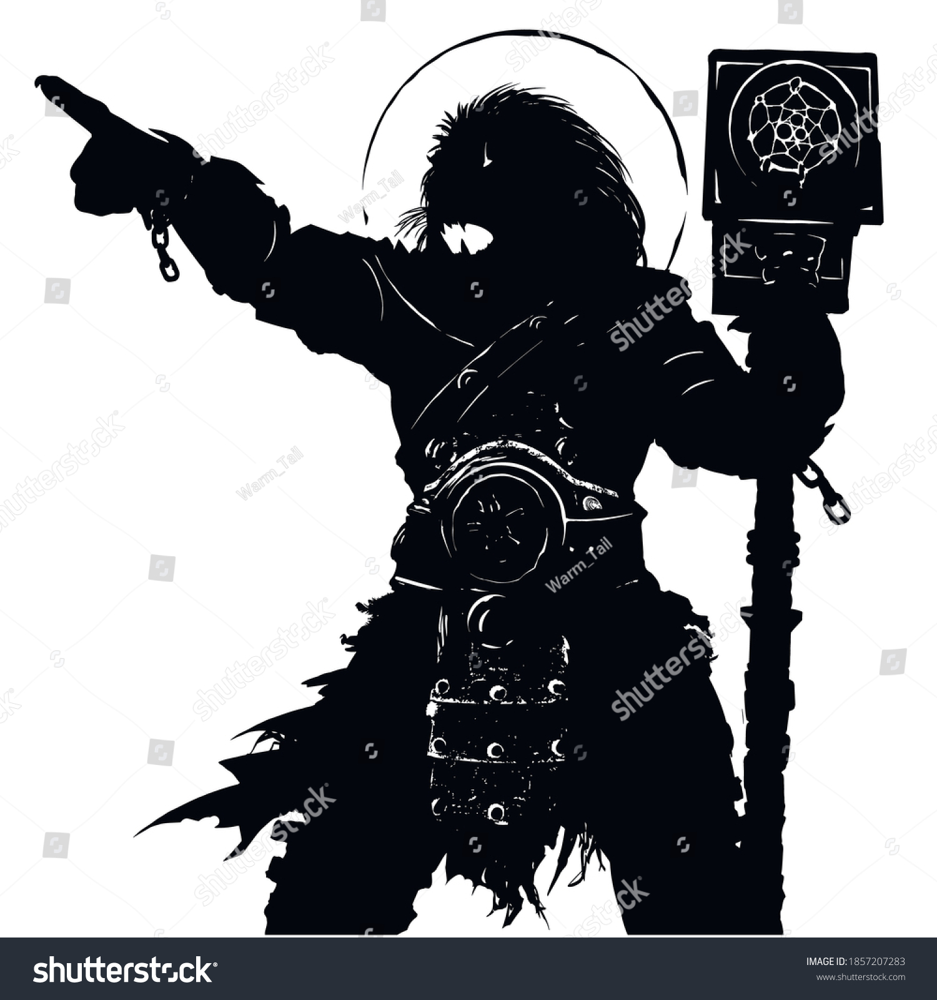
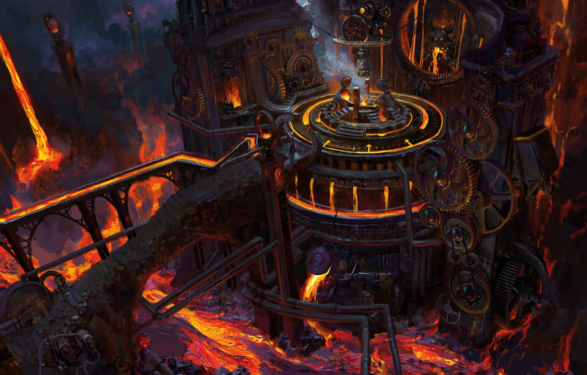

Random Encounter:

Juri is a powerful blacksmith, one with a connection to the forces of life, death, and the earth. He wears the bones of all of his favorite dead, and in battle, he wields his hammer - he will not debase himself by using anything else.
The rebellion did not affect Juri at first, but things changed when the entire place was flooded with lava. A great many servants and guards died as the earth split open and spit fire from the seemingly the depths of the Hells itself. Juri himself was unharmed - though where he went, none are alive to say.
As most citizens of Agartha were unaware of Juri's existence, many think that the Guardian of the Depths has little impact on the rest of the castle. However, with his death, all remaining guardians will be weakened. The passive benefits provided by Juri, while not nearly as noticable in their primes, are supplementing their lost strength as they attempt to guard what lies beyond the royal chambers.
